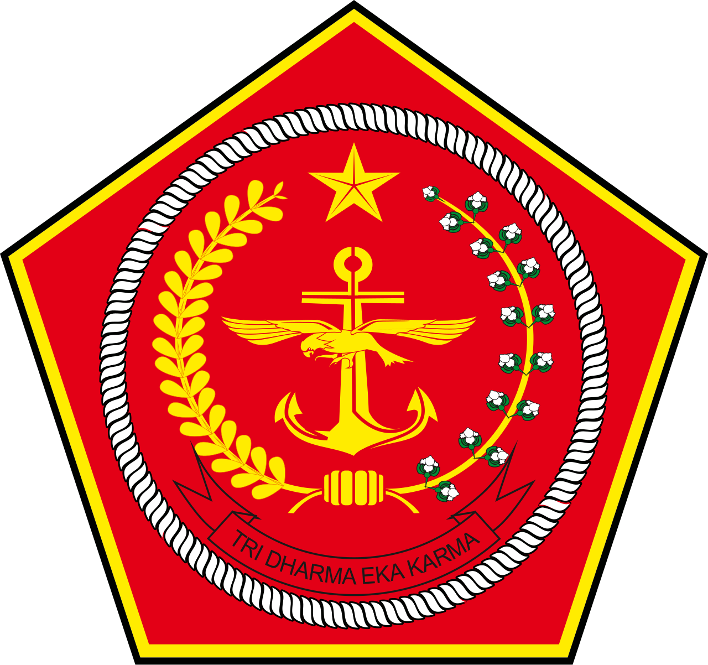

Catatan: Soal matematika cerita diganti soal baru dan tombol baru pada halaman tunggu yang berfungsi untuk mereset keseluruhan jawaban.

Simulasi Pengerjaan Tes Psiko Taruna Akademi TNI Tahun 2025
Pengecekan Tampilan Visual
"Kerjakan dengan tenang, sungguh-sungguh, semangat, dan berdoa"
PERINGATAN PENTING !!
Ini adalah simulasi tes psikologi tahun 2025 lalu. Ini bukan soal asli tahun 2025 lalu tapi untuk materinya sama seperti tahun 2025 lalu dengan penambahan sedikit.
Ini bukan soal yang pasti muncul di tahun ini tapi setidaknya anda merasakan cara mengerjakan soal Psi CAT Taruna Akademi TNI T.A. 2025 lalu.
Peringatan!!
Website ini bila tidak sengaja Reload (Muat Ulang) maka akan kembali ke tampilan awal dan jawaban yang telah anda jawab sebelumnya akan hilang, maka hati-hati.
Subtest yang harus dikerjakan
Halaman Tunggu
Ujian akan dimulai saat waktu tunggu habis atau Anda menekan Lanjutkan.
Informasi Pengerjaan:
- Sub-tes berikutnya adalah: Matematika Geometri.
- Waktu pengerjaan soalnya adalah 10 menit.
- Soal akan otomatis berganti ke nomor berikutnya ketika Anda memilih jawaban.
Contoh Soal:
Fase Menghafal
Waktu Menghafal Tersisa:
03:00NAMA BUAH:
- A. APEL
- B. JERUK
- C. LEMON
- D. MELON
- E. PISANG
NAMA NEGARA:
- A. CEKO
- B. INDONESIA
- C. QATAR
- D. RUSIA
- E. ZIMBABWE
NAMA ALAT MUSIK:
- A. BIOLA
- B. FLUTE
- C. ORGEN
- D. UKULELE
- E. XILOFON
NAMA PROFESI:
- A. DOKTER
- B. GURU
- C. HAKIM
- D. NELAYAN
- E. VOKALIS
NAMA SAYURAN:
- A. ERCIS
- B. KANGKUNG
- C. SELADA
- D. TOMAT
- E. WORTEL
Soal Matematika Geometri
Daftar Soal
Konfirmasi Selesai
Apakah Anda yakin ingin mengakhiri sesi ini?
Waktu pengerjaan mungkin masih tersisa. Jika Anda menekan "Yakin", Anda tidak dapat kembali ke soal bagian ini dan akan dipindahkan ke halaman tunggu untuk tes berikutnya.
Seluruh Sesi Ujian Selesai!
Terima kasih telah mengikuti simulasi tes. Berikut adalah rekapitulasi kunci jawaban dan pembahasan dari seluruh sub-tes numerik, verbal, figural, perbandingan, dan kepribadian yang telah Anda kerjakan.